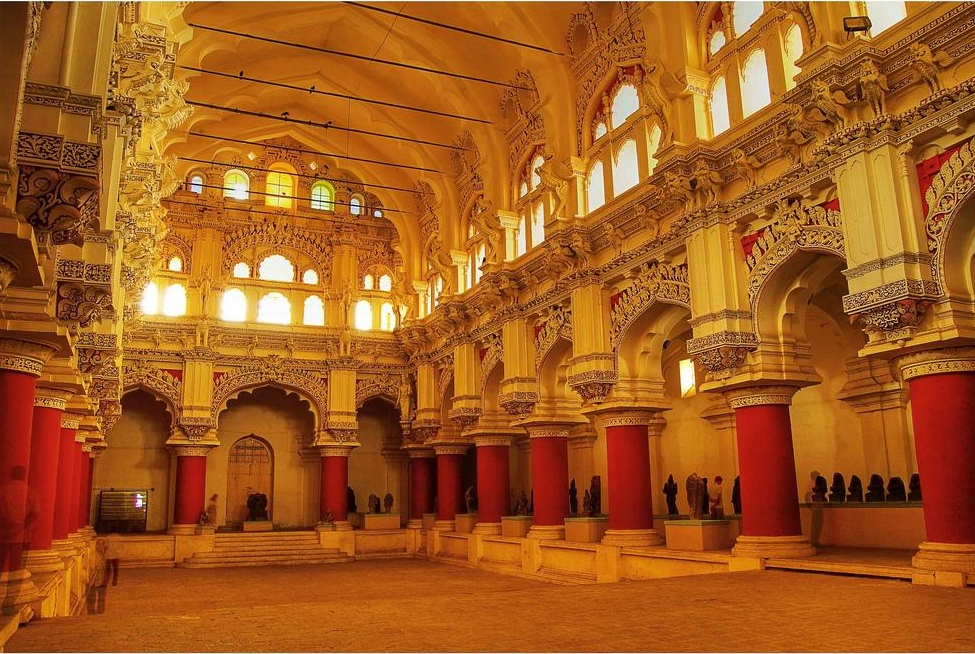

A 17th century palace built by King Thirumalai Nayak.
Blend of Dravidian and Islamic architecture, massive pillars, and grand courtyards.
It offers a glimpse into royal life and architectural brilliance.
Evening sound and light shows narrate the story of Silappathikaram, adding cultural depth.